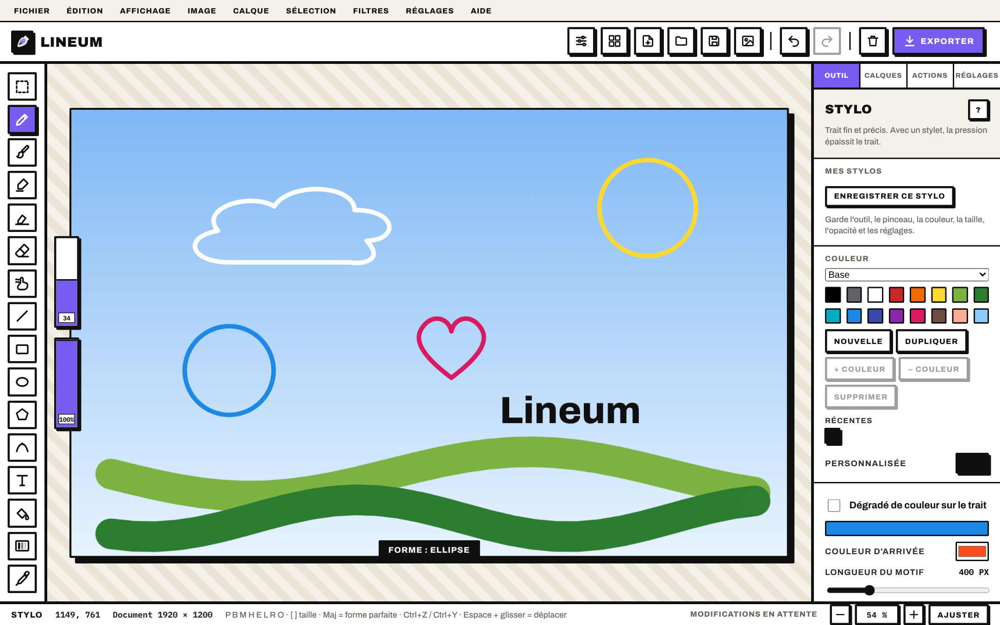
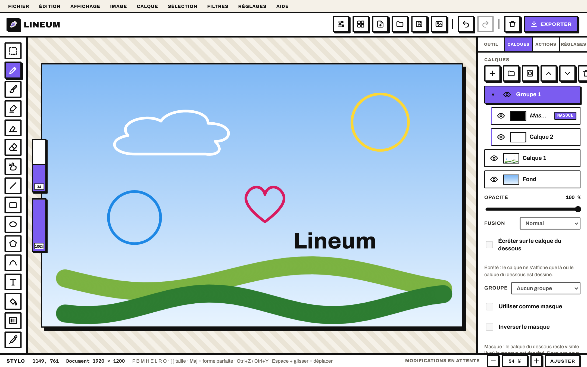
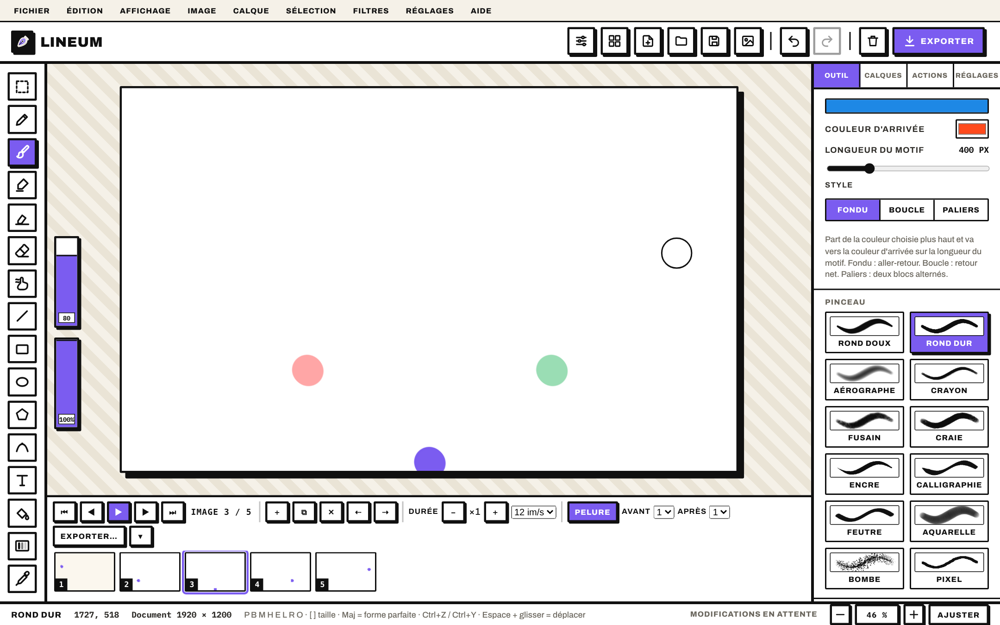
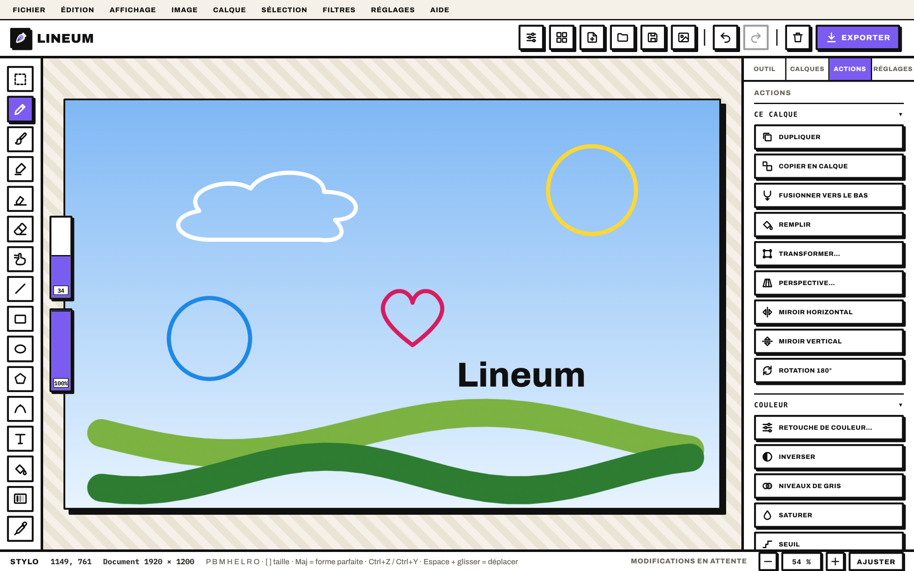
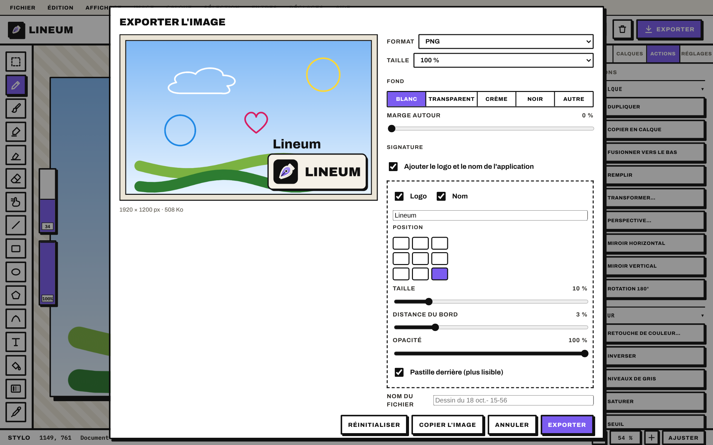
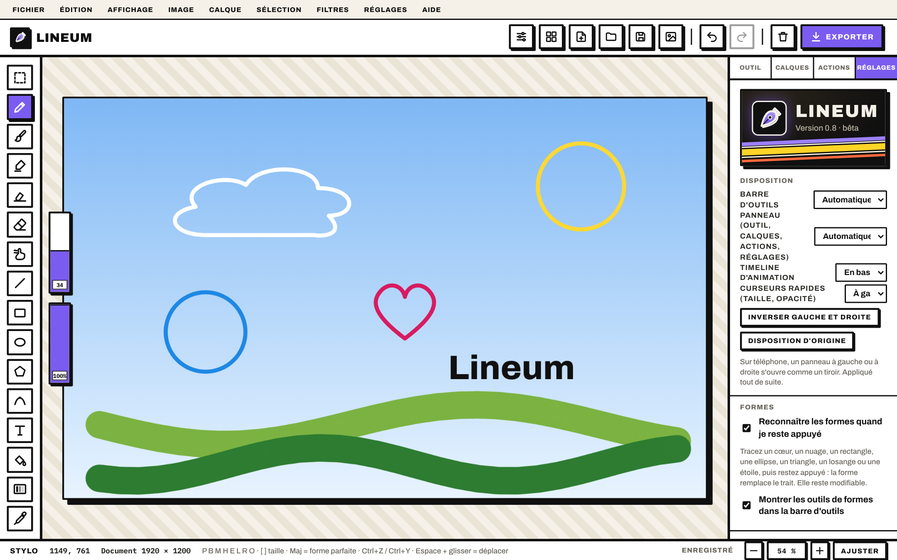
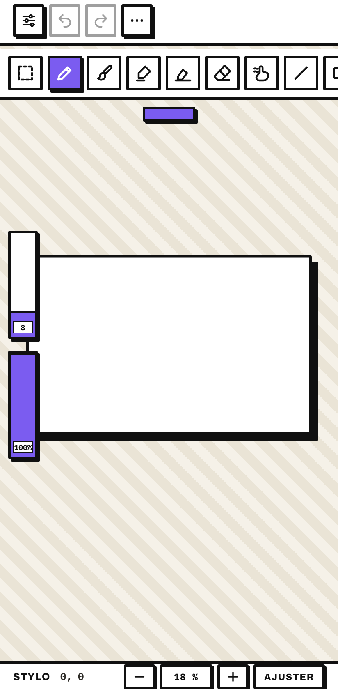

Dessiner en calques, sur téléphone et tablette.
Un vrai atelier de dessin dans la poche. Sans compte, sur votre appareil.
Lien de la bêta et Google Play : bientôt.

Sur votre appareil.
Pas de compte, pas de serveur. Les dessins restent chez vous.
Rien d'imposé.
Pas de statistiques d'usage. Aucune publicité dans l'app pour l'instant.
Un vrai outil.
Calques, masques, pinceaux réglables, animation, export en plusieurs formats.
Pinceaux et stylos
Douze pinceaux : rond doux, rond dur, aérographe, crayon, fusain, craie, encre, calligraphie, feutre, aquarelle, bombe, pixel. Pression du stylet, stabilisateur, flux, dureté, grain et forme de la pointe. « Mes stylos » garde un stylo prêt à reprendre en un geste.

Calques, groupes et masques
Opacité, modes de fusion, écrêtage, groupes repliables, masques de calque. Un calque de référence qui n'est jamais exporté. Ombre portée, contour et lueur par calque.
Formes à main levée
Tracez un cœur, un nuage, un rectangle, une ellipse, un triangle, un losange ou une étoile, puis restez appuyé : la forme remplace le trait et reste modifiable. Facultatif, on peut le couper dans Réglages.

Animation
Une timeline avec une vignette par image, la pelure d'oignon pour voir l'image précédente, une durée par image et une lecture en boucle. Export en GIF animé, en ZIP de PNG ou en vidéo WebM.
Retouches
Luminosité, contraste, teinte, saturation, niveaux. Flou gaussien et de mouvement, netteté, perspective, transformation, baguette magique et lasso.


Export soigné
Aperçu en direct. PNG, JPEG ou WebP, fond au choix (transparent compris), marge, et signature facultative : logo et nom, à la position choisie.
Couleurs, styles et démarrage
Des palettes fournies (chibi, manga, aquarelle, néon, pixel) et les vôtres. Des lots de style qui ajoutent stylos et palette, partageables par fichier. Des modèles de départ (papier, quadrillage, cases de BD, ciel, nuit) et des guides de dessin : tiers, nombre d'or, visage, corps en 8 têtes, perspective.

À votre main
Barre d'outils, panneau, timeline et curseurs rapides, placés à gauche, à droite, en haut ou en bas. Thèmes clair, sombre, noir pur, ou selon l'heure ; couleur d'accent au choix.
- Étape 1
Installer
Installez Lineum et ouvrez-le : un premier dessin est prêt.
- Étape 2
Dessiner
Ajoutez des calques, réglez vos pinceaux. Tout est enregistré sur l'appareil.
- Étape 3
Exporter
Exportez en image ou en GIF, ou gardez le projet au format
.lineum.

Sur téléphone et sur tablette
Lineum fonctionne au stylet ou au doigt. Le doigt sert à zoomer, déplacer, annuler (deux doigts) et rétablir (trois doigts). Android 7.0 et plus. Environ 7 Mo.
Faut-il un compte ?
Non.
Où sont mes dessins ?
Sur votre appareil, dans l'app (« Mes dessins »). Il n'y a pas de sauvegarde en ligne : pensez à enregistrer un fichier .lineum pour garder une copie.
Ça marche sans internet ?
Oui.
C'est gratuit ?
Oui, pendant la bêta.
Quels formats ?
Projets .lineum (et anciens .mcanvas). Export PNG, JPEG, WebP, GIF animé, ZIP de PNG, vidéo WebM.
Et sur iPhone ?
Pas pour l'instant.
Quel rapport avec Vectorem ?
Lineum est l'app cousine de Vectorem : même esprit, un autre domaine.
Lineum est en bêta.
Installez l'application Android et dites-nous ce qui manque. Le lien de téléchargement sera publié ici.
Lien de la bêta : bientôt. Google Play : bientôt.
Lineum vient de Vectorem.
Vectorem regroupe les outils du quotidien dans une seule app, sans compte. Même esprit, un autre domaine.